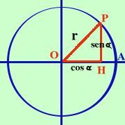

|
Dimostriamo che la prima formula fondamentale e' valida per tutte le circonferenze.  Consideriamo una circonferenza qualunque di raggio r e su di essa prendiamo un punto P cui corrisponda l'angolo alfa I segmenti OH HP OP formano un triangolo rettangolo, quindi, per essi, vale il Teorema di Pitagora ----- + ----- = ----- OP2 OP2 OP2 OH/OP e' la definizione di coseno HP/OP e' la definizione di seno ottengo |